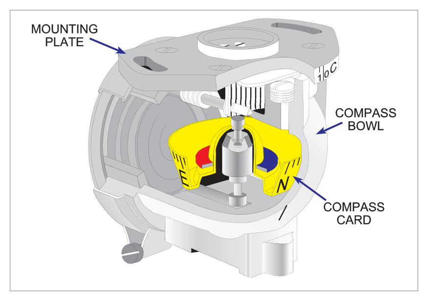
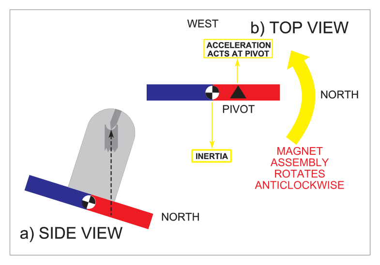
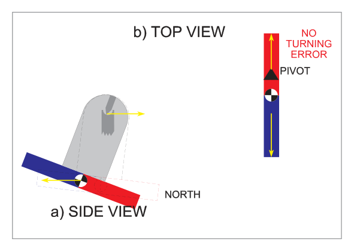
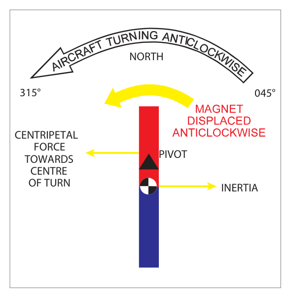
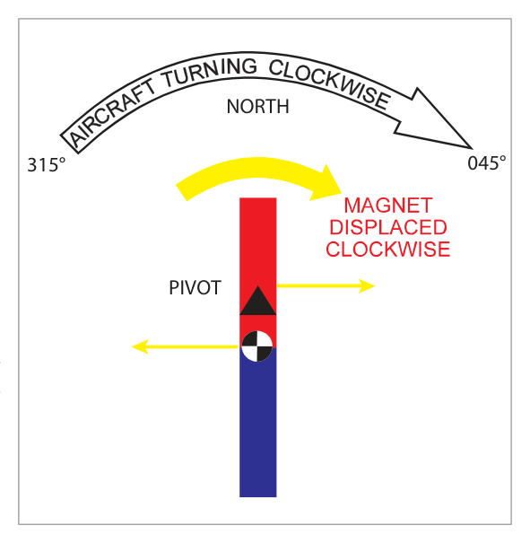
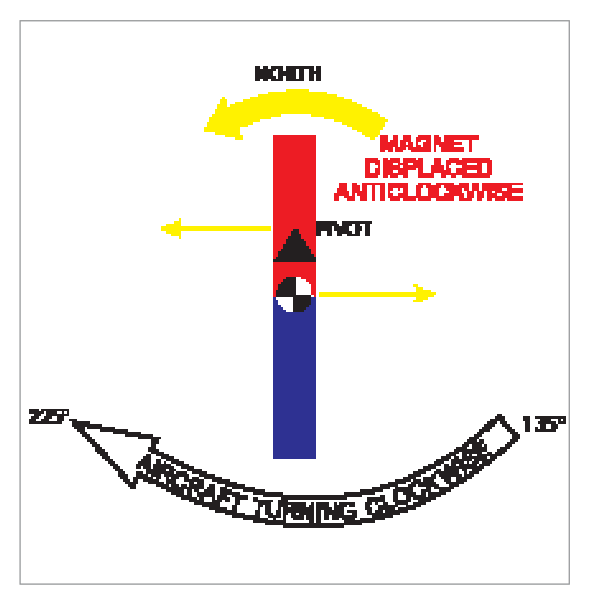
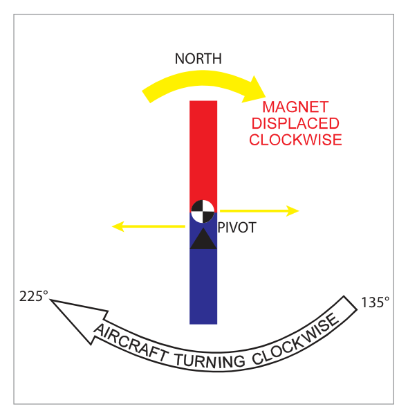

1. The Magnetic Compass and Direct Indicating Compass
What this section covers: The purpose of the magnetic compass and the key concepts of variation and deviation.
A compass indicates direction relative to a known datum. The magnetic compass uses the horizontal component (H) of the earth's magnetic field as its directional datum. Unfortunately, this datum (the magnetic meridian) is generally not aligned with the true meridian — the angular difference between them is magnetic variation.
Additionally, iron/steel components and electric currents in the aircraft distort the earth's field locally, causing the compass magnet to deviate from the magnetic meridian. This is compass deviation.
Direct Indicating Compass: Also called the direct reading compass. The pilot reads heading directly from the pivoted magnet assembly — no remote transmission. Main type: the vertical card compass (B-type or E-type).
2. The Vertical Card Compass
What this section covers: Physical description and operating principle of the vertical card compass.
The vertical card compass (B-type / E-type) is the standard direct reading compass for general use — the main magnetic heading reference in light aircraft and the standby compass in larger aircraft.
A circular compass card is attached directly to the magnet assembly.
The combined unit is suspended in liquid within the compass bowl.
A vertical lubber line on the glass window enables heading to be read off the rotating card.

Fig. 10.1 – A vertical card compass — source p.119
What this section covers: The three key requirements of a direct reading compass and how each is achieved.
Three requirements: The magnet system must be Horizontal, Sensitive, and Aperiodic (dead beat).
3.1 Horizontality
The magnets must lie as nearly as possible in the horizontal plane. A freely suspended magnet would align with the total field T and dip — only horizontal at the magnetic equator. To achieve horizontality, the assembly is pendulously suspended: the centre of gravity (CG) is below the supporting pivot.
Two couples act: (1) Z pulling the red end downward; (2) the weight W acting down through CG (displaced by tilt) and reaction R upward through pivot. Equilibrium results in a residual tilt of approximately 2° (red/north end down) in mid-latitudes, Northern Hemisphere. (Blue/south end down in Southern Hemisphere.)
3.2 Sensitivity
The compass must seek the horizontal component H in all areas except near the poles. Sensitivity is increased by:
Using two, four, or six short magnets or a circular magnet (high pole strength alloy)
Iridium-tipped pivot in a jewelled cup (reduces friction)
Lubrication from the compass liquid
Reduced effective weight through liquid buoyancy
3.3 Aperiodicity (Dead Beat)
The assembly must settle quickly after being disturbed, with oscillations rapidly damped. Achieved by:
Several short magnets (mass near centre → low moment of inertia → easier to damp)
Light alloy framework to minimise weight
Compass liquid acts as primary damping medium
Grid ring compass adds damping wires for faster damping than vertical card type
4. The Compass Liquid
What this section covers: Why liquid is used and what properties it must have.
The liquid is essential — it dampens oscillations and lubricates the pivot. Required properties:
Low coefficient of expansion (temperature changes cause expansion — handled by an expansion chamber or Sylphon tube)
Exam Tip: The liquid serves two primary functions: (1) damping oscillations, (2) lubricating the pivot. Low viscosity is required to minimise liquid swirl — but the liquid must still be viscous enough to damp oscillations. Various liquids including alcohol have been used.
5. Deviation and Accuracy
What this section covers: Definition of deviation, its naming convention, and the EASA accuracy requirement.
Deviation is produced by the iron/steel components in the aircraft distorting the earth's field. It is the angle between the local magnetic meridian and the direction in which the compass magnets are lying.
East (+) deviation: North-seeking (red) ends point EAST of magnetic north
West (−) deviation: North-seeking ends point WEST of magnetic north
Deviation varies with heading — must be measured on multiple headings (compass swing)
Residual deviation after swing is recorded on the compass deviation card in the aircraft
EASA (Part-25) Accuracy Requirement: ± 10°
During the swing, normal flying conditions should be simulated: engines running, electrical/radio services on, aircraft in level flight attitude. Ferromagnetic tools, watches, and objects must not be near the compass during a swing.
6. Acceleration and Turning Errors – Theory
What this section covers: Why acceleration and turning produce compass errors — the fundamental mechanism.
Acceleration and turning errors occur whenever the CG of the magnet assembly moves away from its normal position almost directly below the pivot. When the CG is displaced, the earth's vertical component Z exerts a torque about the pivot, rotating the magnet assembly and producing a false heading indication.
Key Condition: These errors only occur where there is a significant vertical component (Z) in the earth's field. Near the magnetic equator (Z → 0), errors are negligible (only liquid swirl remains).
No error occurs when the manoeuvre displaces the CG north or south (in the plane of the magnetic meridian) — only the north-south tilt changes, with no azimuth rotation.

Fig. 10.3 – Pendulously suspended magnet in Northern Hemisphere: CG below and south of pivot due to residual dip — source p.123
7. Errors Caused by Linear Acceleration
What this section covers: Detailed worked examples of acceleration error for key headings in both hemispheres.
Maximum on E and W, zero on N and S (in both hemispheres). This is because acceleration on N/S headings displaces CG in the magnetic meridian plane — no azimuth error.
7.1 Acceleration on 270°M (Northern Hemisphere)
The inertia of the pendulously suspended assembly causes it to swing back behind the pivot (which is north of the CG). Z produces an anticlockwise rotation → compass over-reads → indicates an apparent turn towards north. Example: real heading 270°, compass reads ~280°.
Now the pivot is offset to the south of the CG (blue/south-seeking end dips down). Inertia swings assembly back → clockwise rotation → compass under-reads → apparent turn towards south.
7.5 Acceleration on a Northerly Heading (Northern Hemisphere)
CG lags — but the CG and pivot remain in the plane of the magnetic meridian → only a change in N/S tilt → no error.

Fig. 10.8 – Acceleration on 360°M (Northern Hemisphere): no error — source p.126
8. Summary of Acceleration Errors
Acceleration errors summary:
Zero on N/S headings (both hemispheres)
Maximum on E/W headings (090°M and 270°M)
Acceleration → apparent turn towards the nearer pole (north in NH, south in SH)
Deceleration → apparent turn towards the further pole (south in NH, north in SH)
Clockwise displacement of magnet assembly → compass under-reads
Anticlockwise displacement → compass over-reads
Size of error depends on: heading, magnitude of acceleration, design of magnet system, magnetic latitude (H vs Z ratio). Errors maximum near magnetic poles, zero at magnetic equator.
flowchart TD
A["Linear Acceleration"] --> B{"Heading?"}
B -->|N or S| C["No Error (CG stays in meridian plane)"]
B -->|E or W| D["Maximum Error"]
D --> E{"Hemisphere?"}
E -->|NH, accel| F["Apparent turn NORTH (towards nearer pole)"]
E -->|NH, decel| G["Apparent turn SOUTH (towards further pole)"]
E -->|SH, accel| H["Apparent turn SOUTH (towards nearer pole)"]
E -->|SH, decel| I["Apparent turn NORTH (towards further pole)"]
9. Turning Errors
What this section covers: The largest compass errors — caused by turns through north and south.
Turning errors are maximum when turning through north or south, zero when passing through east or west. They are generally larger and more significant than acceleration errors.
In a turn, centripetal force acts through the pivot towards the centre of the turn; centrifugal (inertial) force acts outward through the CG. This causes the magnet assembly to "swing out" from the turn, rotating it around the pivot.
9.1 Key Terminology
Sluggish compass: Aircraft and magnet assembly rotate in the same direction → fewer degrees pass under lubber line than actual heading change → pilot must undershoot (roll out early)
Lively compass: Aircraft and magnet assembly rotate in opposite directions → more degrees pass under lubber line than actual heading change → pilot must overshoot (roll out late)
9.2 Turning from 045° to 315° through North (NH — Left Turn)
In NH, CG is south of pivot. In a left turn through north, inertia throws magnet assembly anticlockwise. Aircraft and magnet rotate in same direction → compass is sluggish. Anticlockwise → over-reads. Pilot sees fewer than 90° pass → must undershoot. Stop at ~335° indicated to achieve 315° actual.

Fig. 10.9 – Left turn through North (NH): sluggish compass, undershoot required — source p.127
9.3 Turning from 315° to 045° through North (NH — Right Turn)
Inertia throws assembly clockwise. Same direction as aircraft → sluggish. Clockwise → under-reads. Stop at ~025° indicated to achieve 045° actual. Must undershoot.

Fig. 10.10 – Right turn through North (NH): sluggish compass, undershoot required — source p.128
9.4 Turning from 135° to 225° through South (NH — Right Turn)
Aircraft turns right (clockwise) but inertia throws magnet anticlockwise (opposite direction to aircraft) → compass is lively. Anticlockwise → over-reads. Pilot sees more than 90° pass → must overshoot. Stop at ~245° indicated to achieve 225° actual.

Fig. 10.11 – Right turn through South (NH): lively compass, overshoot required — source p.128
9.5 Turning from 135° to 225° through South (SH — Right Turn)
In SH, CG is north of pivot (blue end dips toward south pole). Inertia throws magnet clockwise. Same direction as aircraft → sluggish. Must undershoot. Stop at ~205° to achieve 225°.

Fig. 10.12 – Right turn through South (SH): sluggish compass, undershoot required — source p.129
9.6 Turning through East or West (No Error)
Magnets are tilted north-south but this tilt is in the vertical plane of the magnetic meridian through the pivot. There is no rotational couple about the pivot → turning error is zero when passing through east or west.
10. Turning Errors – Liquid Swirl
What this section covers: How the compass liquid modifies turning errors.
During a turn, the liquid in contact with the bowl tends to be dragged around with the bowl, creating eddies that drift inward and deflect the magnet assembly in the direction of the turn.
Hemisphere
Turning through NORTH
Turning through SOUTH
NH
Liquid swirl and magnet both turn anticlockwise → swirl INCREASES turning error
Magnetic equator: no turning error (only liquid swirl).
Practice Questions & Detailed Answers
Questions 1–9 reproduced verbatim from Oxford Instrumentation Chapter 10. Answer key from source.
Q1.In a standby direct reading compass there is:
a non-pendulously mounted magnet system
a single pendulously mounted bar magnet
a circular magnet or pair of bar magnets pendulously mounted
a low magnetic moment system, either of circular or bar configuration
Correct Answer: (c) a circular magnet or pair of bar magnets pendulously mounted
Explanation: The vertical card compass (standby DRC) uses either a circular magnet or two, four, or six short bar magnets to increase pole strength while minimising moment of inertia. All configurations are pendulously mounted to achieve horizontality. See Section 3.
Why the others are wrong:
(a) A non-pendulously mounted system would not be horizontal outside the equator — pendulous suspension is essential.
(b) A single bar magnet is not used — multiple short magnets reduce moment of inertia for better aperiodicity.
(d) The system must have a HIGH magnetic moment (not low) to be sensitive to the weak directive force H.
Instructor's Note: The design uses multiple short magnets rather than one long one — this keeps mass near the centre, reduces moment of inertia, and improves damping. More magnets = higher pole strength without longer length.
Q2.The main requirements of a direct reading magnetic compass are that it should be:
horizontal, sensitive, periodic
easily read, floating in a transparent liquid, quick to react to change in aircraft heading
positioned directly in front of the pilot, easily corrected for magnetic deviation, aperiodic
Explanation: The three key requirements are Horizontal, Sensitive, and Aperiodic — these must all be met for the compass to work reliably in all phases of flight. See Section 3.
Why the others are wrong:
(a) Replaces "aperiodic" with "periodic" — the opposite requirement. An aperiodic (dead-beat) instrument settles quickly; a periodic one would oscillate indefinitely.
(b) These are design features, not the primary requirements that define compass performance.
(c) Positioning and deviation correction are operational considerations — not the fundamental physical requirements of the magnet system.
Instructor's Note: The three requirements — Horizontal, Sensitive, Aperiodic — are always examined together. Learn them in any order.
Q3.For a position in the southern hemisphere, the effect of acceleration errors are greatest on headings:
180° and 360°
045° and 225°
135° and 315°
090° and 270°
Correct Answer: (d) 090° and 270°
Explanation: Acceleration errors are maximum on East and West headings (090° and 270°) in both hemispheres. The rule does not change between hemispheres — only the direction of the apparent turn changes (towards the nearer pole, which is south in the SH). See Section 8.
Why the others are wrong:
(a) 180° and 360° are north/south headings → zero acceleration error (CG moves in meridian plane only).
(b) & (c) 045°/135°/225°/315° are intermediate headings — errors exist but are not maximum.
Instructor's Note: Maximum acceleration error = E/W in BOTH hemispheres. This applies regardless of which hemisphere you're in — only the direction of the apparent turn changes.
Q4.An aircraft in the southern hemisphere is turning from a heading of 090°C to 360°C using a DGI. At the end of the turn the compass will read ....... than 360° and liquid swirl will ....... this effect.
more; increase
less; increase
more; decrease
less; decrease
Correct Answer: (d) less; decrease
Explanation: The aircraft is turning left (from 090 to 360°) through north in the Southern Hemisphere. North is the FURTHER pole in the SH (south is nearer). Turning through the further pole: aircraft and magnet rotate in OPPOSITE directions → compass is LIVELY → over-reads → will show MORE than 360° (e.g. ~020°) as degrees pass quickly. Wait — the question says compass reads LESS than 360°. Let me reconsider: turning from 090 to 360 is a left turn of 90°. In SH, turning through north (further pole) — the magnet assembly is thrown out clockwise (opposite to aircraft which turns anticlockwise). Clockwise magnet = under-reads. So compass reads LESS than 360°. Liquid swirl acts in direction of aircraft turn (anticlockwise/left) which opposes the clockwise magnet displacement — swirl REDUCES the error. Answer: less; decrease. See Section 11.
Why the others are wrong:
(a) more; increase — incorrect; compass under-reads and swirl reduces, not increases.
(b) less; increase — correct on "less" but wrong on swirl: swirl reduces this error in the SH through north.
(c) more; decrease — incorrect reading direction.
Instructor's Note: In SH: North is the FURTHER pole. Further pole = lively (wait — lively = opposite direction rotation). In SH turning north: clockwise magnet (opposite to aircraft left turn) = under-reads. Swirl acts with aircraft turn = opposes clockwise magnet = reduces error. Answer: less; decrease.
Q5.In a standby compass the magnet system is immersed in a transparent liquid. The purpose of this liquid is to:
increase sensitivity, increase aperiodicity
increase sensitivity, decrease aperiodicity
increase sensitivity at high latitudes, lubricate bearings
Explanation: The liquid serves two main functions: (1) it lubricates the pivot and provides buoyancy, reducing effective weight → lower friction → increased sensitivity; (2) it acts as a damping medium → increased aperiodicity (faster settling). See Section 4.
Why the others are wrong:
(b) The liquid increases aperiodicity (better damping), not decreases it.
(c) The liquid's sensitivity benefit works at all latitudes, not just high ones. "Lubricate bearings" is partially correct but understates the buoyancy contribution.
(d) The liquid actually causes liquid swirl — it does not reduce it. Low viscosity minimises swirl, but the liquid inherently introduces some swirl.
Instructor's Note: Liquid = sensitivity (buoyancy/lubrication) + aperiodicity (damping). Liquid swirl is a downside of the liquid, not a benefit. Low viscosity helps minimise swirl.
Q6.To improve the horizontality of a compass, the magnet assembly is suspended from a point:
on the centre line of the magnet
below the centre of gravity
above the centre of gravity
varying with magnetic latitude
Correct Answer: (c) above the centre of gravity
Explanation: Pendulous suspension requires the pivot to be above the CG. With the CG below the pivot, the weight of the assembly acts to oppose the dip-induced tilt caused by Z, keeping the magnets near horizontal. See Section 3.1.
Why the others are wrong:
(a) Suspension on the centre line of the magnet would give no pendulous action — the CG and pivot would coincide.
(b) Suspending from below the CG would be unstable and would not oppose the Z-induced tilt.
(d) The suspension point is fixed by design — it does not vary with latitude.
Instructor's Note: Pivot ABOVE CG = pendulous = stable = horizontal. This is the same principle as a pendulum. The weight of the assembly always acts to restore horizontal when pivoted from above the CG.
Q7.The magnitude, and sense, of turning error shown by a direct reading compass varies with: [6 statements listed] — Of these statements:
only 1, 2, 5 and 6 are correct
only 1, 3, 5 and 6 are correct
only 2, 4 and 5 are correct
all are correct
Correct Answer: (d) all are correct
Explanation: All six factors affect turning error: (1) design of compass, (2) direction of turn, (3) rate of turn, (4) hemisphere, (5) heading, (6) dip at the aircraft's latitude. Each of these directly influences the magnitude and/or sense (clockwise/anticlockwise) of the magnet assembly displacement during a turn. See Section 9 and Section 11.
Why the others are wrong:
(a), (b), (c) All omit at least one valid factor. Rate of turn (3) matters because faster turns create larger centrifugal displacement. Hemisphere (4) determines which pole is nearer and the direction of the error.
Instructor's Note: Turning error factors: DRAT-HLC → Design, Rate of turn, Heading, Dip (latitude), direction of turn (Hemisphere), Compass design, Latitude. When the answer is "all", eliminate distractors by confirming each factor is genuine.
Q8.During a sustained turn ....... the nearer magnetic pole, the effect of liquid swirl will ....... compass turning error.
away from; increase
towards; not affect
away from; not affect
towards; increase
Correct Answer: (d) towards; increase
Explanation: When turning towards the nearer pole (through north in NH, through south in SH), the magnet assembly and liquid both rotate in the same direction as the aircraft. Liquid swirl reinforces the magnet's rotation, increasing the turning error. See Section 10.
Why the others are wrong:
(a) Away from the nearer pole = through the further pole = liquid swirl reduces error (opposite effect).
(b) & (c) Liquid swirl always affects turning error to some degree — it cannot be "no effect".
Instructor's Note: Towards nearer pole → sluggish → swirl increases. Away from nearer pole (= towards further) → lively → swirl decreases. Simple rule: swirl always acts in the direction of turn = same direction as the nearer-pole error = adds to nearer-pole error.
Q9.When carrying out a turn at the magnetic equator there will be:
no turning error
a tendency to under-read turns through south and over-read turns through north
a tendency to under-read turns due to liquid swirl
no turning error when turning through east or west
Correct Answer: (c) a tendency to under-read turns due to liquid swirl
Explanation: At the magnetic equator Z = 0 → no dip-based turning error. However, liquid swirl still exists as a small residual error. Swirl turns the magnet in the direction of the aircraft's turn — for a right turn this is clockwise → compass under-reads. So there IS a small turning error due to liquid swirl alone. See Section 10.
Why the others are wrong:
(a) There IS a small turning error at the equator — liquid swirl provides a slight, direction-dependent error even with no dip.
(b) Without the Z component at the equator, the north/south distinction does not apply; swirl is the only source and it acts in both turn directions.
(d) While east/west turning errors are zero at all latitudes (due to no azimuth torque), the question addresses the overall equatorial situation where swirl provides the only error — making option (c) more complete and correct.
Instructor's Note: At equator: Z=0, no dip, no main turning error — but liquid swirl still exists. Swirl acts in direction of turn = clockwise turn = compass under-reads slightly. This is a subtle but testable distinction.